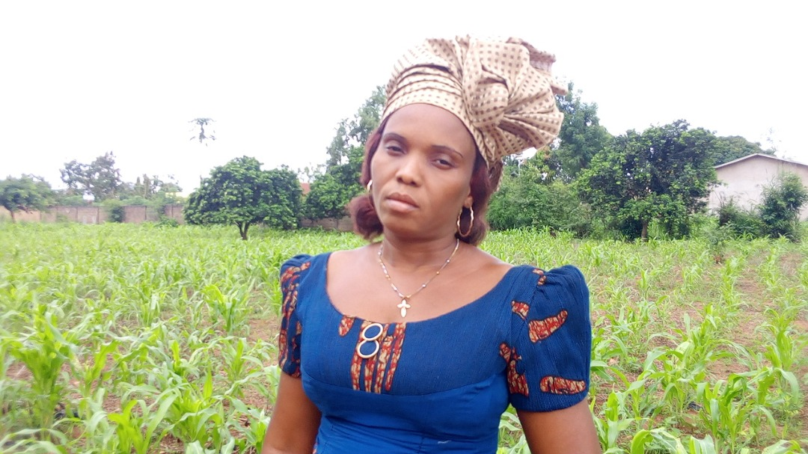
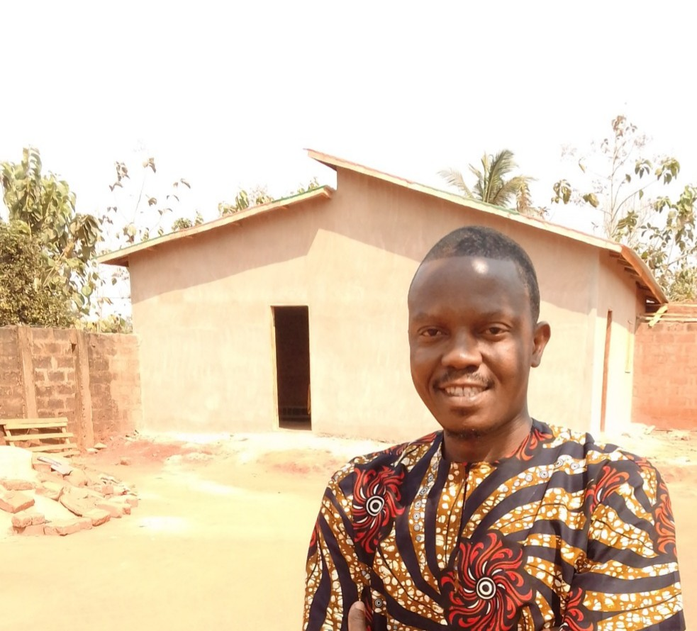

« Ein gebildetes Mädchen verändert die Welt. »
FIFAME bedeutet in den lokalen Sprachen (Adja, Fon und Minan) « Oase ». Wir betrachten Mädchen, Frauen und Mütter als Oasen des Lebens. Ein gebildetes Mädchen wird später als Mutter dafür sorgen, dass auch ihre Kinder zur Schule gehen.

Herausforderungen für junge Frauen in Toviklin
Es gibt viele junge Mädchen und Frauen in Toviklin und den umliegenden Dörfern, die niemals zur Schule gegangen sind oder die Schule abbrechen mussten, weil ihre Eltern früh verstorben sind oder ihnen die finanziellen Mittel fehlten, die hohen Schulgebühren zu bezahlen.
Es gibt auch Mädchen, denen die Motivation fehlt. Teilweise wurden sie von Lehrern belästigt oder aber gezwungen, die Schule zu verlassen. Viele kennen ihre Rechte nicht und kommen aus ländlichen Gebieten, wo die Mehrheit der Eltern selbst nicht zur Schule gegangen oder studiert hat. Die jungen Frauen sind auf sich allein gestellt und haben niemanden, dem sie sich anvertrauen können.
Die NGO FIFAME "let's be educated" bietet diesen Mädchen ein schützendes Zuhause, eine kostenlose Berufsausbildung, Französischunterricht und persönliche Begleitung.
Die Gründer von FIFAME
Die persönlichen Lebensgeschichten von Germaine und Prosper WOINSOU.

Germaine WOINSOU
« Ich heiße Germaine WOINSOU. Ich komme aus Toviklin. Ich bin in Togo aufgewachsen, wo ich zur Schule gegangen bin, meine Nähausbildung gemacht habe und zwei Kinder bekam. Mit der Zeit verließ mich mein Mann für eine andere Frau. Ich kehrte nach Toviklin zurück, als mein Vater bereits tot war. Ich eröffnete meine Nähwerkstatt wieder, um Geld für die Ausbildung meiner Kinder zu verdienen: Meine Tochter studiert heute Medizin und mein Sohn studiert in Cotonou. »
« Da viele Eltern hier arm sind und Mädchen früh verheiratet werden, habe ich beschlossen, bedürftige Mädchen kostenlos auszubilden. Bisher hatte ich 43 Lehrlinge. Viele haben heute ihre eigene Schneiderwerkstatt. Waisenmädchen wohnen bei mir im Mädchenhaus, essen und werden bei Krankheit medizinisch behandelt. Ich bin stolz auf meinen Beruf und helfe von Herzen gern. »

Prosper WOINSOU
« Ich heiße Prosper WOINSOU. Als mein Vater 1996 starb, war ich 11 Jahre alt. Bei meinem Onkel in Dogbo musste ich schwer arbeiten; als er mir das Gymnasium verbieten wollte, wehrte sich meine Mutter und er warf mich hinaus. Ich schlug mich mit Freunden durch, bis ich eine deutsche Frau traf, die mich mit einem deutschen Projekt und Paten zusammenbrachte. Sie finanzierten mein Studium in Kommunikation & Marketing in Cotonou und Sommersemester in Münster (Deutschland). »
« Ende 2018 besuchte ich nach 21 Jahren meine Schwester Germaine in Toviklin. Zu sehen, wie sie uneigennützig mit den Mädchen arbeitet, berührte mich zutiefst: Mir wurde geholfen und mit Freude werde ich helfen — so wurde FIFAME geboren. Ich unterrichte die Mädchen in Französisch, leite Sensibilisierungsworkshops und organisiere Bildungsausflüge. »
Konkrete Aktivitäten in Toviklin
1. Schulische Förderung & Bibliothek
Schulmaterialien, Übernahme von Schulgebühren, Eröffnung der ersten Schulbibliothek des Ortes, Förderunterricht jeden Freitagabend und jährlicher "Tag der Exzellenz" für die besten Schülerinnen.
2. Dreijährige Berufsausbildung
Partnerschaften mit 3 Schneiderwerkstätten und 2 Friseursalons. Finanzierung der 3-jährigen Lehre, Werkzeuge, Nähmaschinen, Prüfungsgebühren, Französischunterricht und Seifenherstellung.
3. Soziales & Weihnachtsmarkt
Aufklärung gegen HIV/Aids, Frühschwangerschaften und Zwangsheirat. Besuche bei älteren Menschen und Krankenhäusern. Weihnachtsmarkt vom 20. bis 25. Dezember und Kinder-Weihnachtsfeier.
4. Umwelttag am 23. Dezember
Jeder 23. Dezember ist dem Recycling und dem Kampf gegen Plastiktüten in der gesamten Innenstadt von Toviklin gewidmet. Aufklärung gegen Buschbrände und Baumpflanzungen.
5. Bildungsausflüge für Mädchen
Kennenlernen des eigenen Landes für Mädchen, die die Gemeinde nie verlassen haben: Cotonou, Ouidah, Ganvié, Abomey, Natitingou, Tanongou-Wasserfälle und Pendjari-Nationalpark.
6. Reisen für europäische Gäste
Fahrradreisen und Kulturreisen durch Benin für Besucher aus Deutschland, Österreich und der Schweiz. Gesunde und sichere Reisebedingungen bei direkter Unterstützung der NGO.
Praktika für internationale Gäste (3 bis 6 Monate)
Praktikanten aus Europa und anderen Ländern werden herzlich für Praktika von 3 bis 6 Monaten aufgenommen. Sie erhalten am Ende ein offizielles Zeugnis über das Praktikum der NGO FIFAME.
Kontakt für Praktika & ReisenHaben Sie Fragen oder Anregungen?
Wir sprechen fließend Deutsch und Französisch.
NGO FIFAME "let's be educated"
Maison Bossoun WOINSOU, BP: 05 Dogbo, Toviklin (Benin)
E-Mail: fifameletsbe@gmail.com
Telefon / WhatsApp: +229 65 24 33 33 oder +229 97 53 43 38